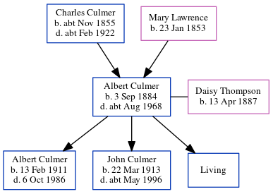

Albert Thomas Culmer 1884 - c1968
[ Home ] | [ Calendar ] | [ Surnames Index ] | [ Census Index ] | [ Family History ]A coleman heavy worker foreman and assistant stove keeper and the child of Charles Culmer (a coal dealer) and Mary Lawrence, Albert Culmer, the second cousin twice-removed on the mother's side of Nigel Horne, was born in Faversham, Kent, England on Sep 3, 18841,2,3,4 and married Daisy Thompson (with whom he had 3 children: Albert Alan Charles, John Thomas and Leonard, along with 1 surviving child) at St Mary, Strood, Kent, England on Apr 16, 19106.
During his life, he was living at 56 Tanners Street in Faversham on Apr 5, 18911; at 22 Station Road, Frindsbury, Kent on Mar 31, 19018; at 14 Hone Street in Strood on Apr 2, 19117; at 31 Cross Street in Strood on Jun 19, 19219; and at 31 Cross Street, Rochester, Kent on Sep 29, 19392. He served in the army from 1914 to 1920 (soldier Number: 33466, Rank: Private, Corps: Royal Fusiliers) He served in the army from 1914 to 1920 (soldier Number: 33466, Rank: Private, Corps: Royal Fusiliers)In 1921 he was working at Messrs Aveling & Peter Engineers at -, High Street Strood, Rochester Kent.
He died c. Aug 1968 in Chatham, Kent, England5.
Parents
- Charles was born c. Nov 1855
- Mary Ann was born on Jan 23, 1853
Children
- Albert Alan Charles was born on Feb 13, 1911
- John Thomas was born on Mar 22, 1913
Citations
- 1891 England, Wales & Scotland Census - Findmypast (was age 6 and the son of the head of the household)
- 1939 Register - Findmypast (was the head of the household)
- England & Wales births 1837-2006 - Findmypast
- Kent Burials - Findmypast
- England & Wales deaths 1837-2007 - Findmypast
- England & Wales Marriages 1837-2005 - Findmypast
- 1911 Census for England & Wales - Findmypast (was age 26 and the head of the household)
- 1901 England, Wales & Scotland Census - Findmypast (was age 16 and a servant in the household)
- 1921 Census Of England & Wales - Findmypast (was age 36 and the head of the household)
Media
England & Wales births 1837-2006 - BMD/B/1884/4/AZ/000137/062
England & Wales marriages 1837-2005 - BMD/M/1910/2/AZ/000077/313
1911 Census for England & Wales - GBC/1911/RG14/03869/0647/1
1939 Register - TNA/R39/1770/1770A/015/18
England & Wales deaths 1837-2007 - BMD/D/1968/3/AZ/000186/106
1901 England, Wales & Scotland Census - GBC-1901-0003108466
Britain, Campaign, Gallantry & Long Service Medals & Awards - GBM/MCI/1051452
Kent Burials - KENT/FHS/BUR/CIVIL/170027
Kent marriages and banns - PRS/MEDWAY/MAR/0070719/1
1921 Census Of England & Wales - GBC/1921/RG15/04015/0707/01
Family Tree
Generated by ged2site. Last updated on Jun 11, 2024